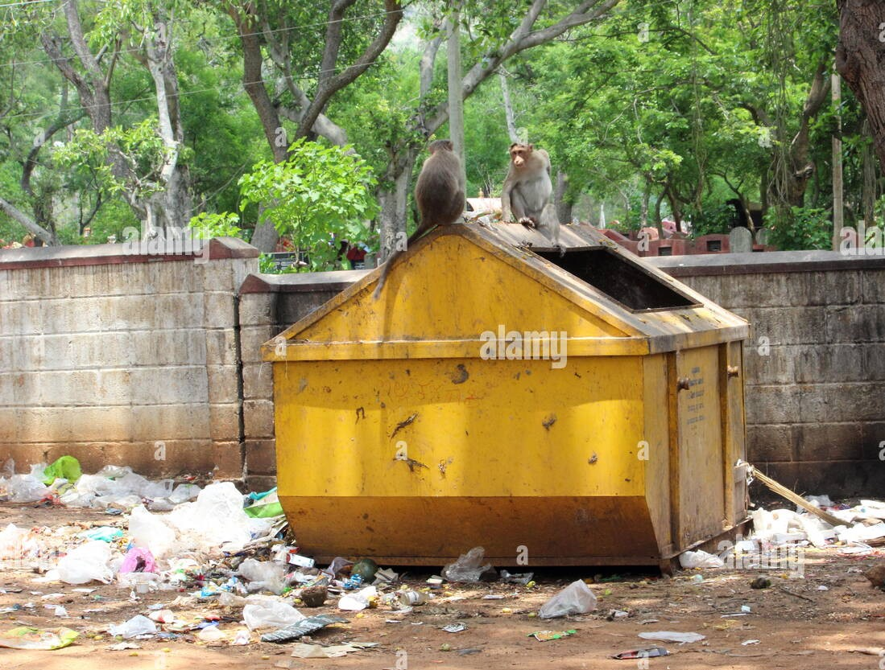
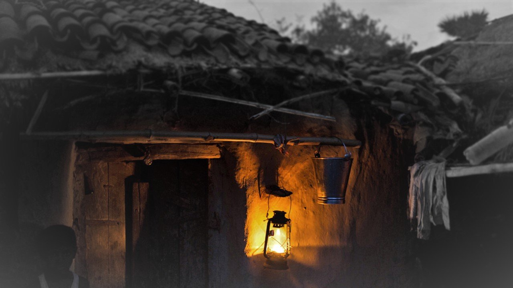

Community Resolve
Its the convenient online hub for reporting non-emergency issues in our community. From potholes to graffiti it include all, our platform makes reporting a breeze. We're connected to a citizen feedback system, so your concerns will be heard and addressed quickly. Together, let's create a more pristine and secure place for all!.



